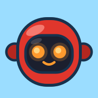
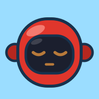

Đảo phiêu lưu
Every day is a short trip across an island: Đọc → Trả lời Minny → Kể qua tranh, then the flag. Bright daylight, chunky ink outlines, one juicy yellow button per screen. Reading stays the hero; the monster cheers, it never sells.

Each screen has exactly one yellow button. Everything else is white or a link.
Every icon carries a Vietnamese word. Body text ≥ 16 px, kid copy 18 px.
No “sai”, no red X, no timers. Wrong answers get “Gần đúng rồi!” + the answer.
Every motion has a still twin. Reduce-motion users lose nothing but movement.
Colour
Contrast: ink on sun 8.9:1, ink on sky 8.6:1, ink on cream 12:1, white on leaf 5.3:1. Never put white text on sun, sky, coral or hill green. Parent page uses the same tokens with cream ground and less decoration.
Chữ · Type
Nút · Buttons
Primary 64 px tall (72 px hero), 3 px ink border, 6 px hard ink shadow that collapses to 2 px on press — the tactile “squish”. Secondary is white. Disabled is dashed and says why in words, never just greyed. Tap targets ≥ 48 px everywhere; primary ≥ 64.
Thẻ · Cards
White, no shadow. Information: rank progress, lists.
Sand. The 3-step path and the finish flag.
Leaf with white text — the “hill” where friends stand.
Chip & huy hiệu
Rank is a shield, colour = tier, stars written as ★ text so it reads aloud. Badges from the game system (first_story, streak_3 …) reuse the shield with their emoji swapped for a drawn icon.
Bản đồ 3 bước
Nhân vật · Expressions
 Vui
Vuiidle, lists
Vẫy chàoarrival
reward, rank-up
 Ối!
Ối!errors
 Mơ màng
Mơ màngempty, resting
voice, questions
Monsters are the child's own avatar built from the existing Kenney parts — only the mouth/eyes/arms swap per expression. Minny always appears in a round porthole with a red ring; she speaks, the monster reacts.
avatars, map
 Đang nói
Đang nóiasking

Đang ngủvoice resting
intro, parents
recording
Great job!
Minny is drawn flat (vector, ink outline, same style as the monsters) so every pose is a tiny SVG that scales and loads fast on cheap phones — no 3D renders needed. Red #E0362C body, dark visor, glowing orange eyes, heart on her chest.
Chuyển động · Motion
Thở · bob2.6 s loop, ±10 px, ±2°. Avatar on home.Still: static, same pose.
Still: “Wow!” face + arms up.
Still: thicker 6 px sun outline.
Still: burst drawn, confetti placed.
Only transform and opacity animate (cheap on low-end Android). Max 3 moving things on a screen. No loops over 1 per screen except the halo on the next action. Sound cue points: arrival “ding”, answer “pling”, reward “ta-da”, rank-up fanfare — every sound has a visual twin and is muted by the parent switch. Toggle Chuyển động in Tweaks to see the still versions on every artboard; the same switch follows prefers-reduced-motion.
Bố cục · Layout
1 column, 16 px gutters, sky scene on top, primary button inside the first 700 px.
2 columns: adventure + map left, rank + friends right. 24 px gutters.
Same as 1280 at 960 content; side columns 280 px.
3 columns in a 1200 container: monster | adventure + map | rank + friends. Reading screen goes picture-left, text-right.